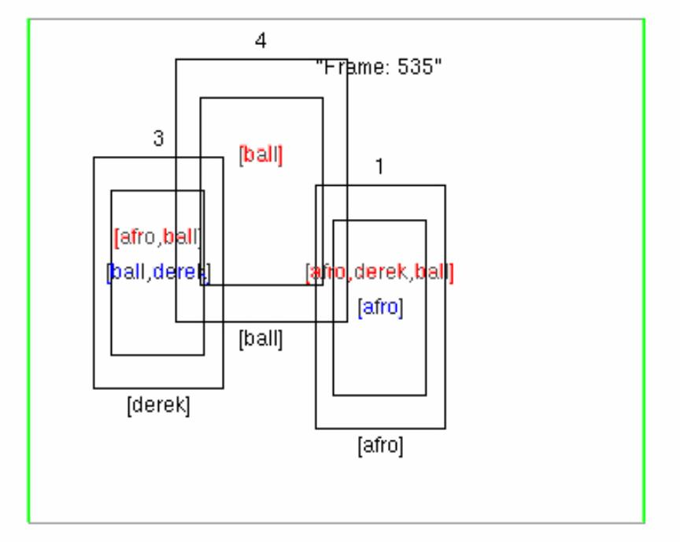

|
CogVis: Enforcing Global Spatio-Temporal Consistency to Enhance Reliability of Moving Object Tracking and Classification
|

Despite considerable research and significant progress, current object recognition and tracking software is unreliable under real-world operating conditions. Object trackers have particular difficulty with complex scenes where multiple moving objects are in close proximity or occlude each other. Object recognition algorithms are also inaccurate, especially where objects are seen from different angles or are occluded.
Our system takes the imperfect output produced by object tracking and classification software and refines it based on principles of logical consistency and spatio-temporal continuity. The result is a significant improvement in the accuracy of automatic labelling of objects in video images of a dynamic scene.
Vision researchers have proposed a variety of techniques for resolving indeterminacies caused by close proximity and occlusion among objects. Several approaches involve some kind of reasoning about the continuity of objects. The system developed at Leeds takes account of spatio-temporal continuity in a very general way, based on qualitative spatial and temporal relationships and logical modelling of continuity constraints. Our system performs long-term reasoning about object-blob associations over extended sequences of frames. By maintaining spatio-temporal consistency over sequences, many local imperfections and ambiguities in the low-level data are eliminated.
Related Publications
Bennett, B; Magee, D; Cohn, A G; Hogg, D C. Using spatio-temporal continuity constraints to enha
nce visual tracking of moving objects in: Lopez de Mantaras, R & Saitta, L (editors) ECAI
2004 Proceedings of the 16th European Conference on Artificial Intelligence, pp. 922-926 IOS Press
. 2004.
(PDF)
Links
The Cognitive Vision (CogVis) Project
Vision Group Webpage
The School of Computing
MSc in Cognitive Systems
The University of Leeds